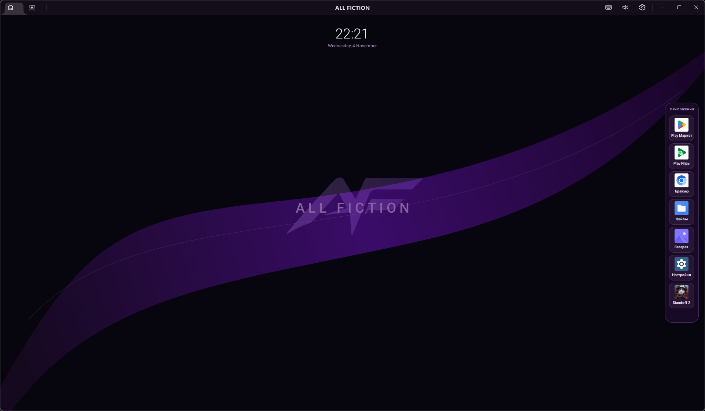

Производительность
Графическое ускорение, настройка ресурсов и ориентация на плавный игровой процесс.
Мобильные игры.
Комфорт на ПК.
ALL FICTION — игровой Android-эмулятор от LIMINAL PROJECT на базе MuMu Player. Наша цель — сделать игровой процесс удобнее, стабильнее и приятнее.

Реальный интерфейс ALL FICTIONВ основе ALL FICTION — возможности MuMu Player и собственное визуальное оформление проекта. Конкретная поддержка зависит от версии и конфигурации ПК.
Графическое ускорение, настройка ресурсов и ориентация на плавный игровой процесс.
Клавиатура и мышь для привычной игры на компьютере.
Запуск мобильных игр и приложений, совместимых с базовой платформой.
Ориентировочные требования приведены по официальной документации MuMu Player. Они не являются отдельными результатами тестирования ALL FICTION.
Источник: MuMu Player ↗Здесь будет официальный видеообзор продукта с нашего YouTube-канала. Добавь ID ролика в script.js, и видео появится прямо на странице.
Установи ALL FICTION и следи за новостями и обновлениями в официальном канале.